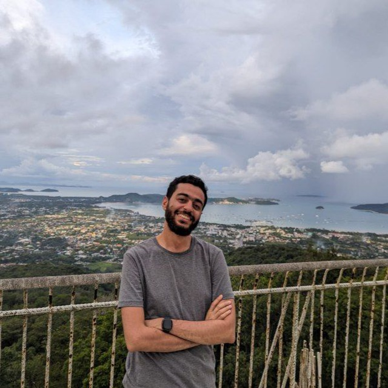

PhD Fellow
Aalborg University · Pioneer Centre for AI (P1)
Emotions and multimodal affective reasoning, with a focus on alignment and interpretability.
PhD fellow · Aalborg University & P1
I work on emotions and affective reasoning in multimodal AI.
I’m a PhD fellow at Aalborg University and affiliated with the Pioneer Centre for AI (P1).
Previously, I was a research associate at MBZUAI, where I worked on multimodal reasoning and detailed image captioning. I also completed my MSc in Computer Vision there.

My research focuses on multimodal learning, particularly emotion understanding and affective reasoning. I am interested in how models combine information from speech, video, and language, and which cues they rely on when interpreting emotions. I am especially interested in situations where these cues are subtle, ambiguous, or conflicting, and understanding how models handle these situations and which cues influence their predictions..
I am also interested in how cultural differences shape emotional expression and perception, and how these differences affect emotion recognition across cultures. My work also explores temporal emotion understanding, cross-modal alignment, and model interpretability.
Aalborg University · Pioneer Centre for AI (P1)
Emotions and multimodal affective reasoning, with a focus on alignment and interpretability.
MBZUAI · United Arab Emirates
Multimodal reasoning and generation, with a focus on descriptive image captioning.
MBZUAI · United Arab Emirates
Human and Computer Vision: teaching support, grading, and laboratory preparation.
Data science at Analytics Patrols, software development at the National Company for Roads, and instruction at the National Telecommunication Institute.
Mohamed bin Zayed University of Artificial Intelligence
First Class Honours · GPA 3.95 / 4.0
Thesis: Negating Bias in Hybrid Transformers for Class Incremental Learning.
Banha Faculty of Engineering · Egypt
First Class Honours · GPA 3.5 / 4.0
Thesis: Copy and Move Image Tampering Using DCGANs.
March 2025
AIXplore, smart travel agent · December 2024
Smart Classroom Assistant via emotion recognition · March 2022
MBZUAI postgraduate research scholarship recipient, 2020.